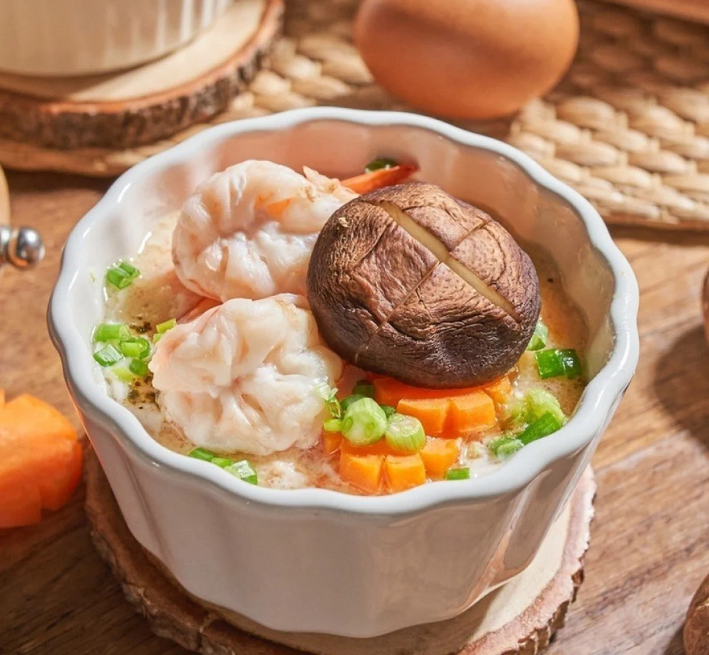

วัตถุดิบไข่ตุ๋นทรงเครื่อง
ไข่ไก่ 4 ฟอง
ต้นหอมซอย 1 ช้อนโต๊ะ
ซีอิ๊วขาว 2 ช้อนโต๊ะ
น้ำมันหอย 1 ช้อนโต๊ะ
น้ำตาลทราย 1 ช้อนชา
พริกไทย ⅛ ช้อนชา
น้ำมันพืช 1 ช้อนโต๊ะ
แครอทหั่นเต๋า 1 ช้อนโต๊ะ
กุ้งสับ 3 ตัว
น้ำเปล่า 150 มิลลิลิตร
เห็ดหอมสด 2 หัว
กุ้งขาว 4 ตัว
แครอทหั่นชิ้น
วิธีทำไข่ตุ๋นทรงเครื่อง
-ตอกไข่ไก่ใส่ลงภาชนะ ตามด้วยซีอิ๊วขาว น้ำมันหอย น้ำตาลทราย พริกไทย น้ำเปล่า และน้ำมัน ผสมให้ส่วนผสมเข้ากัน
- แล้วจึงใส่แครอทหั่นเต๋า กุ้งสับ ผสมให้เข้ากันอีกครั้ง
-เทส่วนผสมลงในถ้วยสำหรับนึ่ง ประมาณเกือบเต็มถ้วย แล้วนึ่งไฟอ่อนประมาณ 25 นาที เพื่อให้เนื้อไข่ตุ๋นเนียนละเอียด
-เมื่อไข่ตุ๋นเริ่มสุก วางแครอทหั่นชิ้นลงไป ตามด้วยกุ้งขาว และเห็ดหอม จากนั้นตุ๋นต่อไปอีกประมาณ 5 นาทีหรือจนส่วนผสมสุกทั้งหมด แล้วจึงโรยต้นหอมซอย
